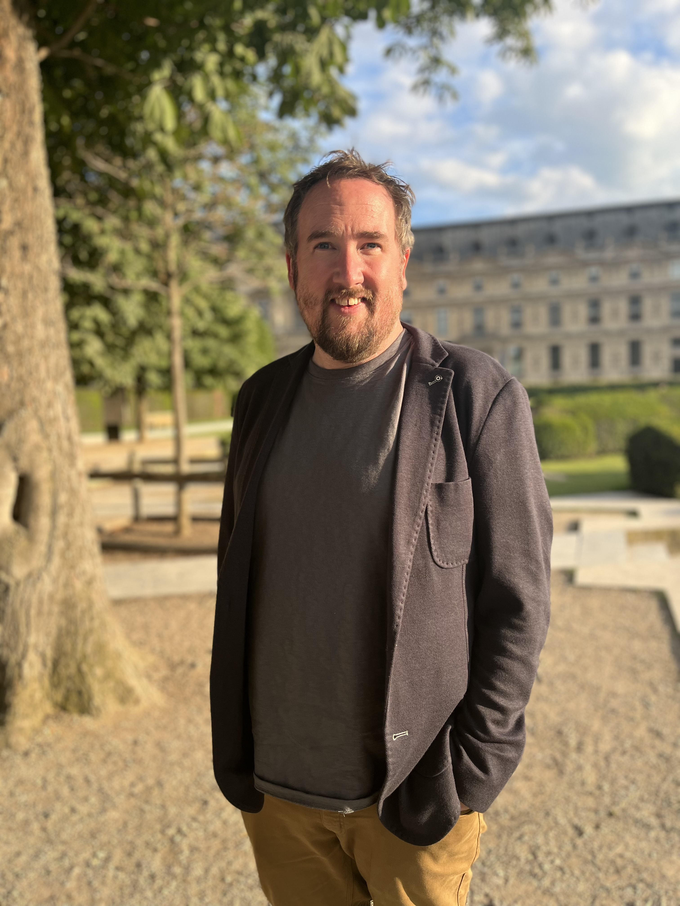

About Me
 UX/UI Research | Design
As a Freelance UX researcher, I bring a rich tapestry of experiences to the table, with a background spanning marketing, social media, content creation, and multi-channel guest experience. My journey has equipped me with a versatile skill set and a keen eye for understanding user needs and behaviors. I thrive in ambiguity, leveraging my flexibility, attention to detail, and self-motivation to unearth insights and craft innovative solutions. Whether it's deciphering complex user journeys or refining digital experiences, I am committed to delivering results that exceed expectations. With a passion for unraveling the intricacies of user interactions, I am dedicated to creating meaningful and impactful experiences that resonate with users across diverse platforms and contexts.